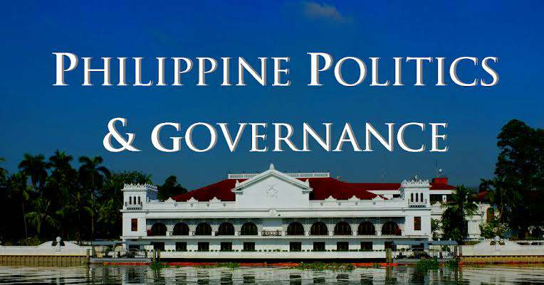

Major Subjects
Creative Writing
The course aims to develop practical and creative skills in reading and writing; introduce students to the fundamental techniques of writing fiction, poetry, and drama; and discuss the use of such techniques by well-known authors in a variety of genres. Each class will be devoted to the examination of techniques and to the workshop of students’ drafts toward the enrichment of their manuscripts. Students learn how to combine inspiration and revision, and to develop a sense of form.
Creative Nonfiction
Focusing on formal elements and writing techniques, including autobiography and blogging, among others, the subject introduces the students to the reading and writing of Creative Nonfiction as a literary form. The subject develops in students skills in reading and thinking critically and creatively, that will help them to be imaginative readers and writers.
Introduction to World Religions and Belief Systems
The course explores the main tenets and practices of major world religions: Judaism, Christianity, Islam, Hinduism, Theravada Buddhism, Mahayana Buddhism, Confucianism, Taoism and Shintoism. It aims to help learners understand the historical contexts of nine religions, appreciate their uniqueness and similarities and promote mutual understanding among believers of different faiths. They are expected to demonstrate understanding and appreciation of one’s faith and that of others.
Community Engagement, Solidarity, and Citizenship
This course focuses on the application of ideas and methods of the social sciences to understand, investigate, and examine challenges of contemporary community life. It focuses on community-action initiatives such as community engagement, solidarity, and citizenship as guided by the core values of human rights, social justice, empowerment and advocacy, gender equality, and participatory development. It aims at enhancing students’ sense of shared identity and willingness to contribute to the pursuit of the common good of the community. It enables students to integrate applied social sciences into community-action initiatives.
Philippine Politics and Governance
This course introduces the students to the basic concepts and vital elements of politics and governance from a historical-institutional perspective. In particular, it attempts to explain how the important features of our country’s political structures/institutions, processes, and relationships developed over time. In the process, the course helps the learners gain a better appreciation of their rights and responsibilities as individuals and as members of the larger sociopolitical community to strengthen their civic competence.
Trends, Networks, and Critical Thinking in the 21st Century
The course provides opportunities for students to discover patterns and extract meanings from emerging trends. It aids in developing their critical and creative thinking skills-- essential tools for decision-making and understanding “ethics of care”. Global trends in the 21st century are examined and are either accepted or rejected on a sound set of criteria. Students will be asked to create and analyze scenarios that will challenge them to (1) formulate their stances on issues or concerns; (2) propose interventions and; (3) formulate alternative futures. The students will realize the interconnections between their neural connections and social realities.
Disciplines and Ideas in the Social Sciences
The course introduces students to basic concepts, subjects, and methods of inquiry in the disciplines that comprise the Social Sciences. It then discusses influential thinkers and ideas in these disciplines and relates these ideas to the Philippine setting and current global trends.
Disciplines and Ideas in the Applied Social Sciences
This course introduces some Applied Social Sciences, namely, Counseling, Social Work, and Communication, which draw their foundation from the theories and principles of Psychology, Sociology, Anthropology, and other Social Sciences. The course highlights the seamless interconnectivity of the different applied social science disciplines while focusing on the processes and applications of these applied disciplines in critical development areas.

HUMSS Culminating Activity/Work Immersion
This course is designed to provide students the opportunity to integrate their learning in the different learning areas of the humanities and social sciences through a creative culminating activity. It focuses on the exhibitions/exhibits of authentic products and performances as evidence of their learning in the humanities and social sciences.